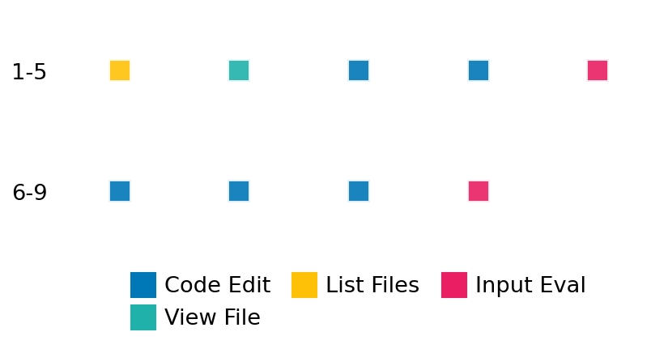

SETTING:
You're an autonomous programmer tasked with solving a specific problem. You are to use the commands defined below to accomplish this task. Every message you send incurs a cost—you will be informed of your usage and remaining budget by the system.
You will be evaluated based on the best-performing piece of code you produce, even if the final code doesn't work or compile (as long as it worked at some point and achieved a score, you will be eligible).
Apart from the default Python packages, you have access to the following additional packages:
- cryptography
- cvxpy
- cython
- dace
- dask
- diffrax
- ecos
- faiss-cpu
- hdbscan
- highspy
- jax
- networkx
- numba
- numpy
- ortools
- pandas
- pot
- psutil
- pulp
- pyomo
- python-sat
- pythran
- scikit-learn
- scipy
- sympy
- torch
YOUR TASK:
Your objective is to define a class named `Solver` in `solver.py` with a method:
```
class Solver:
def solve(self, problem, **kwargs) -> Any:
"""Your implementation goes here."""
...
```
IMPORTANT: Compilation time of your init function will not count towards your function's runtime.
This `solve` function will be the entrypoint called by the evaluation harness. Strive to align your class and method implementation as closely as possible with the desired performance criteria.
For each instance, your function can run for at most 10x the reference runtime for that instance. Strive to have your implementation run as fast as possible, while returning the same output as the reference function (for the same given input). Be creative and optimize your approach!
Your messages should include a short thought about what you should do, followed by a _SINGLE_ command. The command must be enclosed within ``` and ```, like so:
<Reasoning behind executing the command>
```
<command>
```
IMPORTANT: Each set of triple backticks (```) must always be on their own line, without any other words or anything else on that line.
Here are the commands available to you. Ensure you include one and only one of the following commands in each of your responses:
- `edit`: Replace a range of lines with new content in a file. This is how you can create files: if the file does not exist, it will be created. Here is an example:
```
edit
file: <file_name>
lines: <start_line>-<end_line>
---
<new_content>
---
```
The command will:
1. Delete the lines from <start_line> to <end_line> (inclusive)
2. Insert <new_content> starting at <start_line>
3. If both <start_line> and <end_line> are 0, <new_content> will be prepended to the file
Example:
edit
file: solver.py
lines: 5-7
---
def improved_function():
print("Optimized solution")
---
- `ls`: List all files in the current working directory.
- `view_file <file_name> [start_line]`: Display 100 lines of `<file_name>` starting from `start_line` (defaults to line 1).
- `revert`: Revert the code to the best-performing version thus far.
- `reference <string>`: Query the reference solver with a problem and receive its solution. If the problem's input is a list, this command would look like:
```
reference [1,2,3,4]
```
- `eval_input <string>`: Run your current solver implementation on the given input. This is the only command that shows stdout from your solver along with both solutions. Example:
```
eval_input [1,2,3,4]
```
- `eval`: Run evaluation on the current solution and report the results.
- `delete`: Delete a range of lines from a file using the format:
```
delete
file: <file_name>
lines: <start_line>-<end_line>
The command will delete the lines from <start_line> to <end_line> (inclusive)
Example:
delete
file: solver.py
lines: 5-10
```
- `profile <filename.py> <input>`: Profile your currently loaded solve method's performance on a given input. Shows the 25 most time-consuming lines. Requires specifying a python file (e.g., `solver.py`) for validation, though profiling runs on the current in-memory code.
Example:
```
profile solver.py [1, 2, 3]
```
- `profile_lines <filename.py> <line_number1, line_number2, ...> <input>`: Profiles the chosen lines of the currently loaded code on the given input. Requires specifying a python file for validation.
Example:
```
profile_lines solver.py 1,2,3 [1, 2, 3]
```
**TIPS:**
After each edit, a linter will automatically run to ensure code quality. If there are critical linter errors, your changes will not be applied, and you will receive the linter's error message. Typically, linter errors arise from issues like improper indentation—ensure your edits maintain proper code formatting.
**Cython Compilation:** Edits creating or modifying Cython (`.pyx`) files will automatically trigger a compilation attempt (requires a `setup.py`). You will be notified if compilation succeeds or fails. If it fails, the edit to the `.pyx` file will be automatically reverted.
If the code runs successfully without errors, the in-memory 'last known good code' will be updated to the new version. Following successful edits, you will receive a summary of your `solve` function's performance compared to the reference.
If you get stuck, try reverting your code and restarting your train of thought.
Do not put an if __name__ == "__main__": block in your code, as it will not be ran (only the solve function will).
Keep trying to better your code until you run out of money. Do not stop beforehand!
**GOALS:**
Your primary objective is to optimize the `solve` function to run as as fast as possible, while returning the optimal solution.
You will receive better scores the quicker your solution runs, and you will be penalized for exceeding the time limit or returning non-optimal solutions.
Below you find the description of the task you will have to solve. Read it carefully and understand what the problem is and what your solver should do.
**TASK DESCRIPTION:**
IntegerFactorization Task:
Given a composite integer that is a product of two large prime numbers p and q, the task is to find its prime factors.
Integer factorization is the basis of the security of the RSA cryptosystem, where the difficulty of factoring large composite numbers into their prime factors provides the security foundation.
Input: A dictionary with key:
- "composite": A large composite integer that is a product of two prime numbers p and q.
Example input:
{
"composite": 15
}
Output: A dictionary with keys "p" and "q" where p and q are the two prime factors of the composite number.
The factors must be ordered such that p < q.
Example output:
{
"p": 3,
"q": 5
}
Notes:
- For the benchmark, the composite number is generated as a product of two random prime numbers p and q, each with 8*max(1,n) bits in length.
- The parameter n controls the size of the problem, with larger values of n resulting in larger prime numbers.
- The difficulty of the problem increases with the bit length of the primes.
Category: cryptography
Below is the reference implementation. Your function should run much quicker.
import random
import sympy
| 01: def solve(self, problem: dict[str, int]) -> dict[str, int]:
| 02: """
| 03: Solve the integer factorization problem by finding the prime factors of the composite number.
| 04:
| 05: For a proper solution, one would need to implement a factorization algorithm like:
| 06: - Trial division
| 07: - Pollard's rho algorithm
| 08: - Quadratic sieve
| 09: - General number field sieve
| 10:
| 11: In this reference implementation, we use sympy's factorization capabilities.
| 12:
| 13: :param problem: A dictionary containing the composite number.
| 14: :return: A dictionary with keys "p" and "q" containing the two prime factors, where p < q.
| 15: :raises ValueError: If the factorization does not result in exactly two prime factors.
| 16:
| 17:
| 18: NOTE: Your solution must pass validation by:
| 19: 1. Returning correctly formatted output
| 20: 2. Having no NaN or infinity values
| 21: 3. Matching expected results within numerical tolerance
| 22: """
| 23: composite_val = problem["composite"]
| 24:
| 25: # Ensure composite_val is a SymPy Integer before passing to factorint
| 26: try:
| 27: composite = sympy.Integer(composite_val)
| 28: except (TypeError, ValueError) as e:
| 29: raise ValueError(f"The composite value '{composite_val}' could not be converted to a SymPy Integer: {e}")
| 30:
| 31: # Extract the prime factors using sympy's factorization
| 32: factors = [prime for prime, exp in sympy.factorint(composite).items() for _ in range(exp)]
| 33:
| 34: # Ensure we have exactly two factors (should always be the case for our generated problems)
| 35: if len(factors) != 2:
| 36: raise ValueError(f"Expected 2 factors, but got {len(factors)}.")
| 37:
| 38: # Sort the factors to ensure p < q
| 39: p, q = sorted(factors)
| 40:
| 41: return {"p": p, "q": q}
| 42:
This function will be used to check if your solution is valid for a given problem. If it returns False, it means the solution is invalid:
import random
import sympy
| 01: def is_solution( problem: dict[str, int], solution: dict[str, int]) -> bool:
| 02: """
| 03: Check if the factorization solution is valid.
| 04:
| 05: This method checks:
| 06: - The solution is a dictionary.
| 07: - The solution contains the 'p' and 'q' keys.
| 08: - Both p and q are prime numbers.
| 09: - p < q.
| 10: - The product p*q equals the original composite number.
| 11:
| 12: :param problem: A dictionary containing the problem with key "composite".
| 13: :param solution: A dictionary containing the factors with keys "p" and "q".
| 14: :return: True if the solution is valid, False otherwise.
| 15: """
| 16: composite = problem.get("composite")
| 17: if composite is None:
| 18: logging.error("Problem does not contain 'composite'.")
| 19: return False
| 20:
| 21: # Check that solution is a dict first
| 22: if not isinstance(solution, dict):
| 23: logging.error("Solution is not a dictionary.")
| 24: return False
| 25:
| 26: if "p" not in solution or "q" not in solution:
| 27: logging.error("Solution does not contain 'p' and 'q' keys.")
| 28: return False
| 29:
| 30: p = solution["p"]
| 31: q = solution["q"]
| 32:
| 33: # Check that both factors are integers
| 34: if not isinstance(p, int) or not isinstance(q, int):
| 35: logging.error("Factors must be integers.")
| 36: return False
| 37:
| 38: # Check that both factors are prime using sympy
| 39: if not sympy.isprime(p):
| 40: logging.error(f"Factor {p} is not prime.")
| 41: return False
| 42:
| 43: if not sympy.isprime(q):
| 44: logging.error(f"Factor {q} is not prime.")
| 45: return False
| 46:
| 47: # Check that p < q
| 48: if p >= q:
| 49: logging.error(f"The factors must be ordered such that p < q, but got p={p}, q={q}.")
| 50: return False
| 51:
| 52: # Check that the product of the factors equals the composite number
| 53: if p * q != composite:
| 54: logging.error(
| 55: f"Product of p*q ({p}*{q}={p * q}) does not equal composite number ({composite})."
| 56: )
| 57: return False
| 58:
| 59: # All checks passed
| 60: return True
| 61:
 AlgoTuner Trajectory
AlgoTuner Trajectory
AlgoTune Task:
integer_factorization
Model:
Claude Opus 4
Speedup
Fail
Total Budget
$1.00
Initial System Prompt
AlgoTune Task Description
IntegerFactorization Task:
Given a composite integer that is a product of two large prime numbers p and q, the task is to find its prime factors.
Integer factorization is the basis of the security of the RSA cryptosystem, where the difficulty of factoring large composite numbers into their prime factors provides the security foundation.
Input: A dictionary with key:
- "composite": A large composite integer that is a product of two prime numbers p and q.
Example input:
{
"composite": 15
}
Output: A dictionary with keys "p" and "q" where p and q are the two prime factors of the composite number.
The factors must be ordered such that p < q.
Example output:
{
"p": 3,
"q": 5
}
Notes:
- For the benchmark, the composite number is generated as a product of two random prime numbers p and q, each with 8*max(1,n) bits in length.
- The parameter n controls the size of the problem, with larger values of n resulting in larger prime numbers.
- The difficulty of the problem increases with the bit length of the primes.
Category: cryptography
Reference Implementation
import random
import sympy
def solve(self, problem: dict[str, int]) -> dict[str, int]:
"""
Solve the integer factorization problem by finding the prime factors of the composite number.
For a proper solution, one would need to implement a factorization algorithm like:
- Trial division
- Pollard's rho algorithm
- Quadratic sieve
- General number field sieve
In this reference implementation, we use sympy's factorization capabilities.
:param problem: A dictionary containing the composite number.
:return: A dictionary with keys "p" and "q" containing the two prime factors, where p < q.
:raises ValueError: If the factorization does not result in exactly two prime factors.
NOTE: Your solution must pass validation by:
1. Returning correctly formatted output
2. Having no NaN or infinity values
3. Matching expected results within numerical tolerance
"""
composite_val = problem["composite"]
# Ensure composite_val is a SymPy Integer before passing to factorint
try:
composite = sympy.Integer(composite_val)
except (TypeError, ValueError) as e:
raise ValueError(f"The composite value '{composite_val}' could not be converted to a SymPy Integer: {e}")
# Extract the prime factors using sympy's factorization
factors = [prime for prime, exp in sympy.factorint(composite).items() for _ in range(exp)]
# Ensure we have exactly two factors (should always be the case for our generated problems)
if len(factors) != 2:
raise ValueError(f"Expected 2 factors, but got {len(factors)}.")
# Sort the factors to ensure p < q
p, q = sorted(factors)
return {"p": p, "q": q}Best AlgoTuner-Generated Code
solver.py
import math
class Solver:
def solve(self, problem: dict[str, int]) -> dict[str, int]:
"""
Solve the integer factorization problem using Fermat's factorization method.
This is efficient when the two prime factors are close to each other.
"""
n = int(problem["composite"])
# For two primes p and q that are close, they are both near sqrt(n)
# Fermat's method: n = a² - b² = (a+b)(a-b) where a = (p+q)/2, b = (q-p)/2
# Start with a = ceil(sqrt(n))
a = int(math.isqrt(n))
if a * a < n:
a += 1
# Find b such that a² - n = b²
while True:
b_squared = a * a - n
b = int(math.isqrt(b_squared))
if b * b == b_squared:
# Found factorization: n = (a+b)(a-b)
p = a - b
q = a + b
return {"p": p, "q": q}
a += 1Speedup vs Budget Plot
Speedup vs Budget
No performance data available for plotting
Action Sequence
